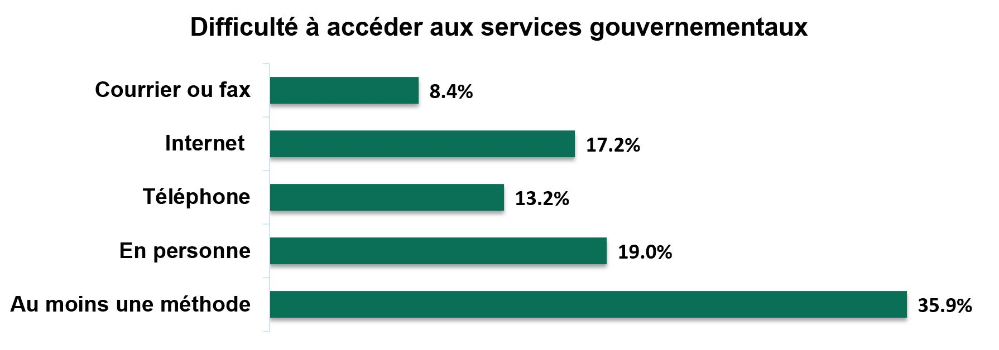

Guide de l’accessibilité - Chapitre 4 Concevoir des expériences plus inclusives
- Introduction - L'histoire derrière le guide
- Chapitre 1 - Découvrir l’accessibilité, c’est un domaine plus vaste que vous ne le pensez.
- Chapitre 2 - Comprendre comment les obstacles nuisent aux personnes en situation de handicap.
- Chapitre 3 - Mobilisez les personnes en situation de handicap dès le début
- Chapitre 4 - Concevoir des expériences plus inclusives.
- Chapitre 5 - Rendre les communications accessibles à tous.
- Chapitre 6 - Acquérir les compétences nécessaires pour fournir un service accessible.
- Chapitre 7 - Faites partie d’une culture accessible.
- Des outils inspirants.
Chapitre 4 Concevoir des expériences plus inclusives
Principe directeur de l’inclusion : La conception universelle
La conception universelle est une approche visant à concevoir et à fournir intentionnellement des programmes et des services sans créer d’obstacles. Non seulement elle contribue à assurer l’inclusion des personnes en situation de handicap, mais elle est aussi considérée comme une bonne pratique de conception qui répond aux besoins de toute personne qui doit accéder à vos programmes et services.
La conception universelle respecte sept principesNote de bas de page 1
- Utilisation équitable. Offrez le même service et la même information lorsque cela est possible et, lorsque cela n’est pas possible, garantissez un accès équivalent. Par exemple, si une personne a besoin de plus de temps pour traiter ou mémoriser de l’information, faites en sorte que les formulaires de demande en ligne n’aient pas de délai imparti pour les remplir afin de permettre des pauses, ou une reprise à une date ultérieure avec la possibilité d’enregistrer pour plus tard.
- Utilisation flexible. Offrez aux clients diverses options pour utiliser le programme ou le service. Par exemple, proposez aux clients différentes façons de vous faire part de leurs commentaires, plaintes et suggestions dans l’ensemble de vos modes de prestation, comme un formulaire en ligne, par écrit ou par téléphone en utilisant un service de relais, au besoin.
- Utilisation simple et intuitive. Réduisez la complexité et veillez à ce qu’il soit facile de prendre en compte les différentes compétences langagières, en lecture et en écriture. Par exemple, fournissez une signalisation à chaque point d’accès, et dans d’autres formats comme l’utilisation de balises d’orientation et l’affichage du contenu en braille ou en gros caractères pour réduire l’anxiété et la confusion.
- Information perceptible. L’information est communiquée efficacement, indépendamment des capacités du client. Par exemple, prenez en charge les lecteurs multimédias qui permettent d’afficher des sous-titres et qui offrent des options audio prévoyant notamment le réglage de la taille et de la couleur pour les personnes malentendantes ou malvoyantes.
- Tolérance à l’erreur. Incite à concevoir de manière à minimiser les risques et les mauvais résultats ou les actions accidentelles ou non intentionnelles. Par exemple, disposez les meubles de manière à assurer qu’aucun objet ne fait obstacle et à éviter que les personnes ne trébuchent ou ne tombent sur des chaises mal placées.
- Effort physique minimal. La conception ne nécessite pas d’efforts excessifs et peut être utilisée efficacement. Par exemple, vérifiez chaque jour de l’accessibilité de votre zone de service, en prenant note des rénovations en cours dans l’immeuble ou des travaux dans la ville, ou en mettant à l’essai la fonctionnalité des ouvre-portes automatiques.
- Dimensions et espace libre pour l’approche et l’utilisation. Prévoyez suffisamment d’espace pour les personnes debout et assises lorsqu’elles utilisent un appareil fonctionnel. Par exemple, aménagez des guichets de service à plusieurs hauteurs pour servir les clients en fauteuil roulant ou donnez la possibilité à une personne ayant des limitations physiques de s’y appuyer.
La conception inclusive est la responsabilité de tous. N’hésitez pas à entrer en contact avec des experts en la matière, des décideurs politiques, des concepteurs et des agents du service à la clientèle.
N’oubliez personne
Les services sont souvent conçus et fournis d’une manière qui entraîne des obstacles pour les personnes qui en ont besoin. Les clients sont souvent confrontés à plusieurs obstacles alors qu’un seul obstacle suffit à empêcher une personne d’accéder à un service – même si un service est « techniquement accessible » et qu’il satisfait aux normes existantes... Demandez-vous toujours si votre client est réellement en mesure d’accéder au service.
Par exemple, si vous ne ciblez que les clients « généraux », vous finirez probablement par oublier la communauté des personnes malentendantes ou malvoyantes et la façon dont ils prendront connaissance de votre programme. Pensez à la façon dont une personne ayant une mémoire réduite recueillera de l’information sur votre programme lorsqu’elle en aura besoin.
Intersectionnalité
Pour être vraiment inclusif, vous devez considérer vos clients comme des êtres humains à part entière. Une personne en situation de handicap ne se limite pas à son incapacité. Chacun a plusieurs caractéristiques que nous devons garder à l’esprit.
L’intersectionnalité concerne une diversité de caractéristiques pour lesquelles la société, ou votre organisation, a créé des obstacles qui empêchent certaines personnes d’accéder aux services. Découvrez quelles sont les caractéristiques susceptibles d’être observées chez vos clients.
Cherchez toujours à savoir qui sont les autres personnes qui n’ont pas accès à votre service. Pour les programmes qui incluent des personnes en situation de vulnérabilité, il est peu probable que ce soit des individus au hasard qui choisissent volontairement de ne pas en bénéficier – et un petit pourcentage d’un grand programme représente encore beaucoup de clients. Ce sont peut-être les personnes les plus démunies qui ne bénéficient pas du programme destiné à les aider.
Bien que ce guide soit axé sur les personnes en situation de handicap, il contient d’autres données démographiques sur des groupes qui peuvent se recouper, créant ainsi des considérations uniques pour votre prestation de services :
- Peuples autochtones – En 2017, 32 % des membres des Premières Nations vivant hors réserve, 30 % des Métis et 19 % des Inuits vivaient avec une ou plusieurs incapacités qui les limitaient dans leurs activités quotidiennes.Note de bas de page 2 Cela recoupe des considérations propres à cette communauté, telles que l’emplacement, la langue et la relation historique avec le gouvernement. De nombreuses communautés isolées, vivant dans des réserves, ne disposent pas de routes pavées, d’un accès facile à Internet (uniquement par satellite, par exemple), ou sont accessibles uniquement par avion.
- La pauvreté – vivre dans la pauvreté signifie que l’individu se trouve dans une situation plus précaire, et qu’advenant des problèmes de prestation de services, ceux-ci peuvent avoir des répercussions plus dramatiques sur les résultats.
- Les jeunes – les troubles de santé mentale sont le type d’incapacité le plus fréquent et touchent 8 % des Canadiens âgés de 15 à 24 ans.Note de bas de page 3
- Les personnes âgées – près de la moitié (47 %) des personnes âgées de plus de 75 ans déclarent avoir une incapacité. Les problèmes de dextérité et les incapacités auditives et physiques augmentent considérablement avec l’âge. Note de bas de page 3
- LGBTQ2+ – En plus des défis créés par la société en général, les personnes transgenres peuvent avoir un besoin accru de traiter avec le gouvernement pendant la transition d’un genre à l’autre, qui peut coïncider avec des handicaps temporaires.
- Les victimes de violence – les survivants de la violence familiale ont une probabilité nettement plus élevée de souffrir de lésions cérébrales, notamment celles entraînées par des commotions cérébrales.
- Les personnes dans les régions rurales ou éloignées.
- Les personnes incarcérées ou précédemment incarcérées.
- Les groupes de minorités visibles.
- Les nouveaux arrivants.
- Les femmes– Les femmes sont plus susceptibles d’avoir un handicap que les hommes (24 % contre 20 %). Note de bas de page 3
De bonnes décisions qui créent une expérience positive
La conception inclusive vise à supprimer les obstacles aux services qui nuisent à la capacité de votre client d’obtenir les services auxquels il a droit.
Lorsque vous élaborez des services, chaque décision peut limiter l’accessibilité du service. Peu d’objectifs de politiques sont au départ inaccessibles; ils deviennent moins accessibles à mesure qu’on prend des décisions concernant les demandes, les rapports, les interactions, etc. Certaines de ces décisions peuvent être nécessaires, peut-être pour des raisons d’intégrité, mais toutes les solutions de rechange ont-elles vraiment été envisagées?
Après avoir exploré toutes les solutions de rechange, les obstacles restants peuvent être examinés pour déterminer comment les contourner lorsqu’ils nuisent à la capacité d’une personne d’accéder au service. La conception des services doit être proactive. Il faut trouver des solutions avant que l’obstacle ne provoque des embûches pour les clients.
Le gouvernement utilise plusieurs modes de prestation pour fournir des programmes et des services. Il s’agit principalement de la prestation en personne, par téléphone et en ligne. Aucun mode de prestation n’est accessible à tous, c’est pourquoi les approches de rechange sont essentielles à l’inclusion.
Effet dérivé
Alors que l’accessibilité se concentre sur les considérations clés relatives aux personnes en situation de handicap, la conception inclusive considère dès le départ comment quelque chose pourrait être facile et utile pour le plus grand nombre de personnes possible. En anglais, on parle du « curb cut effect », qu’on pourrait traduire librement par effet dérivé. C’est ce qui se passe lorsqu’une caractéristique d’accessibilité profite à plus de personnes que le groupe auquel elle était initialement destinée, comme une rampe ou un chemin pour les utilisateurs de fauteuils roulants. Les parents qui utilisent des poussettes, les utilisateurs d’aides à la marche ou les personnes qui transportent de lourds paquets en bénéficient également.
Chaque personne est unique
Les expériences en matière de handicap varient. Certaines incapacités sont légères, d’autres plus graves. Certaines sont progressives, d’autres fluctuent et d’autres encore sont stables. Certaines personnes naissent avec un handicap, et pour bien d’autres, l’incapacité arrive plus tard dans la vie. 71 % des personnes en situation de handicap ont plus d’un type d’incapacité, et peuvent donc vivre des expériences variées. Toutes les personnes en situation de handicap doivent avoir accès aux services.
C’est la personne qui compte
Les capacités d’un même client peuvent varier d’une visite à l’autre. Environ 60 % des personnes en situation de handicap présentent des affections qui évoluent dans le temps (progressives, récurrentes, fluctuantes). Les clients doivent pouvoir décider de la manière dont ils veulent accéder aux services, à chaque fois.
La conception des services ne doit pas supposer qu’un membre de la famille ou un aidant effectuera des tâches au nom d’une personne ayant un type d’incapacité ou une limitation fonctionnelle. Les renseignements personnels méritent d’être protégés. Les personnes en situation de handicap sont comme tout le monde; elles ont le droit d’accéder elles-mêmes à l’information et aux services.
L’accessibilité suppose plus d’un mode de prestation
Un tiers des personnes en situation de handicap ont des difficultés à accéder à au moins un mode de prestation.
- 4% des personnes en situation de handicap ont des difficultés à accéder à des services gouvernementaux par courrier ou fax.
- 2% des personnes en situation de handicap ont des difficultés à accéder à des services gouvernementaux par internet.
- 2% des personnes en situation de handicap ont des difficultés à accéder à des services gouvernementaux par téléphone.
- 19% des personnes en situation de handicap ont des difficultés à accéder à des services gouvernementaux en personne.
- 9% des personnes en situation de handicap ont des difficultés à accéder à au moins un mode de prestation de services gouvernementaux.
Source de données : Enquête canadienne sur l’incapacité (ECI) de 2017.
Une expérience en personne accessible
Considérez les caractéristiques suivantes :
Conception de services
- Le stationnement est proche de l’immeuble, les entrées et les ascenseurs sont équipés de rampes et les portes sont équipées d’un dispositif d’ouverture automatique.
- Des services de transports en commun sont accessibles jusqu’à l’immeuble.
- Le chemin est accessible du point d’arrivée jusqu’à l’entrée.
- Zone sans obstacles, avec rampes texturées, sol tactile et panneaux en braille sur les portes et les panneaux d’orientation.
- Contraste des couleurs et luminosité des environnements (par exemple, les rampes des escaliers ou des rampes doivent contraster avec le mur de fond, les cadres et les ferrures de porte).
- L’alarme incendie a des repères visuels.
- Poignées de porte et commandes murales (par exemple, interrupteurs d’éclairage) abaissées.
- Un comptoir réglable en hauteur est disponible avec une chaise pour que le client puisse s’asseoir confortablement avant et pendant l’interaction.
Technologies d’assistance
- Clavier à l’écran avec boule de commande, manettes ou autres dispositifs de pointage.
- Carte de signature et machine de paiement accessibles.
- Balises d’orientation, codes QR pour aider les clients à s’orienter.
- Téléphones avec de gros numéros et des niveaux de volume plus élevés.
- Avis audible au moyen d’un système de file d’attente.
- Annonce visuelle (écrans numériques) présentant l’information en langue des signes.
- Récepteur en boucle pour amplifier la voix grâce aux aides auditives des clients.
- Accès immédiat à la langue des signes grâce à l’interprétation vidéo à distance.
Formation et culture
- Un préposé à l’accueil formé (guide) accueille le client, détermine ses besoins et, par exemple, l’accompagne dans un endroit prioritaire et lui propose d’utiliser une salle privée si le bruit est trop dérangeant.
- L’agent ne touche pas l’animal d’assistance et ne s’adresse pas à lui.
- L’agent sait utiliser un langage simple et parle au client en phrases courtes, avec confiance, en le rassurant et en l’écoutant attentivement.
- L’agent accorde un délai supplémentaire au client pour lui expliquer la situation et s’assure que la demande de service est bien comprise.
- L’agent fait face au client et lui parle directement à tout moment.
- L’agent parle directement au client, même s’il a amené quelqu’un pour interpréter ou l’aider.
11 % des Canadiens en situation de handicap préfèrent les visites en personne.
Une expérience téléphonique accessible
Considérez les caractéristiques suivantes :
Conception de services
- Option de réponse vocale interactive pour appuyer sur « 0 » afin de sauter l’arborescence d’options et joindre une personne en direct.
- L’agent est en mesure d’accomplir des tâches pour le client, comme l’aider à remplir le formulaire et l’envoyer par courrier ou par courriel, prêt à signer, à la fin de l’appel.
- L’agent est en mesure d’envoyer des renseignements pertinents par courrier électronique, ou dans un format approprié, pour que le client puisse s’y référer ultérieurement.
- Les agents sont équipés et situés de manière à réduire au minimum les bruits de fond.
Technologies d’assistance
- Numéro de téléphone ATS (téléscripteur) auquel on répond avec la même fréquence et les mêmes normes de service que pour tous les autres appels.
- Traitement des appels effectués par le service de relais vidéo et les services de relais (par ATS).
- Les agents de service sont conscients de l’éventail d’interprètes avec lesquels ils peuvent interagir et connaissent les politiques en matière de protection de la vie privée et de représentation par un tiers.
Formation et culture
- L’agent sait utiliser un langage simple et parle au client au moyen de phrases courtes.
- L’agent est formé pour poser des questions simples sans que le client ne se sente débordé.
- L’agent est formé pour poser des questions simples sans que le client ne se sente « corrigé » si des détails sont oubliés ou mélangés et s’assure que toute bizarrerie, tout comportement bizarre ou tout comportement exagéré est traité de manière appropriée et avec la plus grande sensibilité.
- L’agent est formé pour reconnaître les comportements liés à un handicap (par exemple, un trouble de l’élocution ne signifie pas que le client est ivre).
32 % des Canadiens en situation de handicap préfèrent utiliser les services téléphoniques.
Une expérience en ligne accessible
Considérez les caractéristiques suivantes :
Conception de services
- Tous les sites Web gouvernementaux sont tenus de respecter les normes internationales en matière d’accessibilité. Le gouvernement du Canada respecte les Règles pour l’accessibilité des contenus Web 2.0, et la norme 2.1 a été introduite pour inclure des améliorations pour les appareils mobiles.
- Rien sur le site Web ne clignote rapidement, les liens et le menu déroulant ont des titres explicites, le texte utilisé est en langage clair et les icônes sont très visibles.
- Les hyperliens sont intégrés sous forme de chaîne de texte plutôt que d’utiliser l’URL comme texte de lien.
- Les vidéos intégrées sont disponibles en langue des signes ASL/LSQ et ont un son de premier plan de haute qualité qui bloque les bruits de fond.
- Le texte est complémenté par des images, des graphiques et d’autres illustrations.
- Le service d’accueil du clavardage personnalisé aide le client à trouver l’information très rapidement.
- L’agent de clavardage en direct aide le client à remplir un formulaire ou à répondre à des questions précises et peut autoriser la signature numérique.
- Les normes de l’industrie, telles que les Règles pour l’accessibilité des contenus Web, sont des exigences minimales et ne garantissent pas que 100 % des personnes en situation de handicap pourront utiliser le site Web. Être inclusif signifie aller au‑delà des normes minimales.
- L’accessibilité du Web comprend un langage simple et les Règles pour l’accessibilité des contenus Web et la politique du GC visent à ce que les textes soient accessibles à des élèves de la 6eà la 8e année. Il existe des outils qui permettent de mesurer la complexité d’un texte.
Technologies d’assistance
- L’agent de clavardage en direct est autorisé à aider le client à remplir le formulaire de demande en utilisant un lecteur d’écran qui communique sur les haut-parleurs de l’ordinateur du client (JAWS).
- L’intelligence artificielle, telle que la technologie vocale et les robots conversationnels, est proposée pour répondre en temps réel aux questions fréquemment posées.
- Des écrans tactiles et réglables avec des options « Lisez-moi » sont mis à la disposition des clients.
- Optimisation pour les moteurs de recherche Web.
Formation et culture
- L’agent est formé pour poser des questions simples sans que le client ne se sente jugé ou critiqué.
- L’agent sait utiliser un langage simple et parle au client en faisant des phrases courtes.
- La conception de services accessibles est reconnue comme une compétence distincte et les enseignements tirés des services précédents sont repris comme point de départ pour la prochaine conception.
35 % des Canadiens en situation de handicap préfèrent utiliser les services en ligne.
N’obligez pas les clients qui utilisent des lecteurs d’écran à écouter de longs textes tels que des déclarations de confidentialité alors que d’autres clients peuvent les ignorer en faisant défiler le texte.
Répondre aux besoins des clients pendant une pandémie
La pandémie de COVID-19 a considérablement changé le monde dans lequel nous vivons. Elle a également entraîné de grands défis en matière d’accès aux services pour les personnes en situation de handicap. Pendant cette période, le gouvernement doit veiller à ce que les Canadiens handicapés conservent leur santé, leur sécurité et leur dignité.
Trouver les obstacles
En personne
- Les cloisons en plexiglas constituent des obstacles à la communication pour les clients et le personnel, en particulier pour les personnes malentendantes ou en fauteuil roulant.
- L’utilisation accrue de poteaux ou de panneaux amovibles peut également constituer un obstacle pour les clients malvoyants si ces poteaux ne sont pas détectables à la canne, et ils peuvent constituer un risque de trébuchement s’ils ne sont pas correctement fixés.
- Les marquages « Attendez ici » représentent un défi pour les clients ayant une déficience visuelle; de plus, les chiens-guides n’ont pas été entraînés pour respecter l’éloignement social.
- Plusieurs types de handicaps entraînent un plus grand contact avec l’environnement bâti (par exemple, la vue, l’équilibre, la mobilité), un nettoyage régulier est donc crucial pour protéger la santé.
- Le renforcement des procédures de nettoyage peut entraîner des problèmes de santé pour les personnes sensibles aux produits chimiques.
Téléphone
- La fermeture ou la réduction des heures d’ouverture des bureaux en personne peut empêcher certains clients de recevoir les services dont ils ont besoin s’ils sont contraints de passer par un autre mode de prestation.
En ligne
- Intégrez l’accessibilité dès le départ lorsque vous élaborez de nouveaux services en ligne afin de joindre le plus grand nombre de clients possible.
- Incluez du contenu sous forme de vidéos ASL/LSQ lorsque cela est possible.
Créer des résultats positifs
Conception de services
- Fournissez les services dans plusieurs modes de prestation.
- Envisagez de désigner une plage horaire précise pour les services prioritaires.
- Si des files d’attente se forment à l’extérieur de votre centre de services, veillez à ce que la file soit surveillée et prévoyez des sièges faciles à nettoyer ou des marque-places de file d’attente pour ceux qui ne peuvent pas rester debout pendant de longues périodes.
- De nombreuses personnes se fient aux expressions faciales et lisent sur les lèvres pour comprendre. Les masques peuvent créer un obstacle pour ces personnes.
- Prévoyez des rendez-vous pour les clients qui ont des besoins particuliers en matière d’accessibilité.
- Permettez aux représentants d’agir au nom du client.
Technologies d’assistance
- Fournissez des services d’interprétation vidéo à distance pour les clients qui communiquent à l’aide de la langue des signes.
- Fournissez des récepteurs en boucle pour aider les personnes qui portent des appareils auditifs.
Formation et culture
- Veillez à ce que le personnel soit conscient que tout le monde ne peut pas respecter les normes d’éloignement social. Si le personnel est appelé à aider, fournissez-lui des EPI pour qu’il le fasse en toute sécurité.
- Communiquez les changements apportés à votre environnement pour que les clients sachent à quoi s’attendre.
Conseils
- Comprenez les obstacles et prenez en compte les besoins des gens dès le début.
- Faites preuve de souplesse.
- Assurez-vous que les documents et les messages sont simples et faciles à comprendre.
- Veillez à ce que la nouvelle signalisation soit à la hauteur des yeux de tous.
- Accueillez les commentaires pour adapter votre nouvelle façon de travailler rapidement et efficacement.